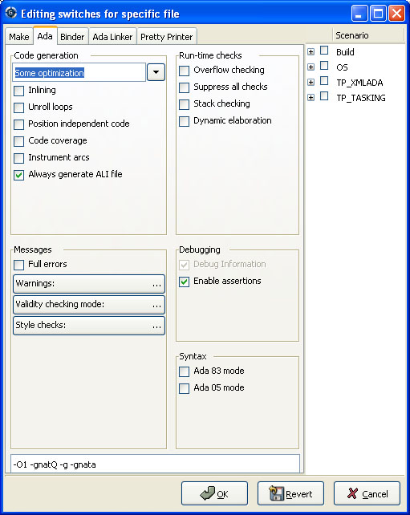

7. Project Handling¶
The discussion of the Project view (see The Project view) gave a brief overview of what the projects are and the information they contain. This chapter provides more in-depth information and describes how you create and maintain projects.
7.1. Description of the Projects¶
7.1.1. Project files and GNAT tools¶
The projects used by GPS are the same as the ones used by GNAT: all
command-line GNAT tools are project aware. Projects files are text (with
the extension .gpr), which you can edit with any text editor or
through GPS’s interface. GPS can load any project file, even those you
created or edited manually, and you can manually edit project files created
by GPS. Most features of project files can be accessed without using GPS.
The detailed syntax and semantics of project files is fully described in the GNAT User’s Guide and GNAT Reference Manual. Read these sections if you want to use the more advanced capabilities of project files that are not supported by GPS’s graphical interface.
You usually will not need to edit project files manually, since GPS provides several graphical tools such as the project wizard (see The Project Wizard) and the properties editor (see The Project Properties Editor).
GPS does not preserve the layout or comments of projects you created manually after you have edited them in GPS. For example, multiple case statements in the project are merged into a single case statement. GPS needs to do this normalization to be able to preserve the previous semantics of the project in addition to supporting the new settings.
GPS uses the same mechanisms to locate project files as GNAT:
absolute paths
relative paths
These paths, when used in a with line as described below, are relative to the location of the project containing the with.
ADA_PROJECT_PATH
If set, an environment variable containing a colon-separated (semicolon under Windows) list of directories to be searched for project files.
GPR_PROJECT_PATH
If set, an environment variable containing a colon-separated (semicolon under Windows) list of directories to be searched for project files.
predefined project path
The compiler internally defines a predefined project path in which standard libraries can be installed, for example XML/Ada.
7.1.2. Contents of project files¶
Project files contain all the information describing the organization of your source files, object files, and executables.
A project file can contain comments, which have the same format as in Ada: they start with “–” and extend to the end of the line. You can add comments when you edit the project file manually. GPS attempts to preserve them when you save the project through the menu, but this is not always possible. GPS is more likely to preserve them if the comments are put at the end of the line:
project Default is
for Source_Dirs use (); -- No source in this project
end Default;
Often, one project file is not enough to describe a complex system. If so, you will create and use a project hierarchy, with a root project importing subprojects. Each project and subproject is responsible for its own set of sources (including compiling them with the appropriate switches and putting the resulting files in the correct directories).
Each project file contains the following information (see the GNAT User’s Guide for the full list):
List of imported projectsWhen compiling sources from this project, the builder first makes sure it correctly recompiled all the imported projects and that they are up to date. This properly handles dependencies between source files.
If one source file of project A depends on some source files from project B, B must be marked as imported by A. If this is not done, the compiler will complain that those source files cannot be found.
Each source file name must be unique in the project hierarchy (i.e., a file cannot be under control of two different projects), ensuring that the file will be found no matter what project is managing it.
List of source directoriesAll sources managed by a project are located in one or more source directories. Each project can have multiple source directories and a given source directory may be shared by multiple projects.
Object directoryWhen sources of the project are compiled, the resulting object files are put in this directory. There must be exactly one object directory for each project. If you need to split the object files across multiple directories, you must create multiple projects importing each other.
When sources from imported subprojects are recompiled, the resulting object files are put in the subproject’s own object directory and not the parent’s object directory.
Exec directoryWhen the object files are linked into an executable, this executable is put in the exec directory specified by this attribute. If it is omitted, the builder puts the executable into the object directory.
List of source filesEach project is responsible for managing its set of source files. These files can be written in any programming language, but the graphical interface supports only Ada, C, and C++.
By default, these source files are found by taking all the files in the source directories that follow the naming scheme (see below) for each language. You can also edit the project file manually to provide an explicit list of source files.
This attribute cannot be modified graphically.
List of main unitsThe main units of a project (or main files in some languages) are the units containing the main subprogram of the application. The name of the file is generally related to the name of the executable.
A project file hierarchy can be used to compile and link several executables. GPS automatically updates the Compile, Run and Debug menu with the list of executables based on this list.
Naming schemesThe naming scheme refers to the way files are named for each language used by your project. GPS uses this to choose the language to use when you open a source file and what tools to use to compile or otherwise manipulate a source file.
Embedded targets and cross environmentsGPS supports cross environment software development: GPS itself can run on one host, such as GNU/Linux, while compilation, execution, and debugging occur on a different remote host, such as Sun/Solaris.
GPS also supports embedded targets such as VxWorks by specifying alternate names for the build and debug tools.
The project file contains the information required to log on to the remote host.
ToolsProject files provide a simple way of specifying the compiler and debugger commands to use.
SwitchesEach tool used by GPS (such as the compiler, pretty-printer, and debugger) has its own set of switches. Moreover, these switches may depend on the file being processed and the programming language it is written in.
7.2. Supported Languages¶
Other information stored in the project file is the list of languages used by the project. GPS supports any language, each with a name you choose, but advanced support is only provided by default for some languages (Ada, C, and C++). You can specify other properties of the languages through customization files (see Adding support for new languages).
The graphical interface only allows you to choose languages currently known to GPS, either through built-in support or your customization files. Supporting a languages means syntax highlighting in the editor, and possibly the Outline view. Other languages have advanced cross-references facilities available. You can edit the project files by hand to add support for any language.
Languages are a very important part of the project definition. For each
language, you should specify a naming scheme to allow GPS to associate files
with that language. For example, you could specify that all .adb
files are Ada, all .txt files are standard text files, etc.
Only files that have an associated known language are displayed in the Project view and available for selection through the menu. Similarly, only these files are shown in the Version Control System interface. It is important to properly set up your project to make these files conveniently available in GPS although you can still open any file through the menu.
If your project includes README files, or other text files, you
should add “txt” as a language (the name is arbitrary) and ensure these
files are associated with that language in the .
7.3. Scenarios and Configuration Variables¶
You can further tailor the behavior of project by using scenarios.
You can specify the value of all attributes of a project except its list of imported projects based on the value of external variables, each of which comes from either the host computer environment or is specifically set in GPS. The interface to manipulate these scenarios is the Scenario view, which you display by selecting the menu (The Scenario View). You may want to drop this window above the Project view so you can see both at the same time.
The Scenario view allows you to select new values for the scenario variables defined in your project and thus dynamically change the view GPS has of your project and its source files.
For example, you can use this facility to compile all the sources either in debug mode (so the executables can be run in the debugger) or in optimized mode (to reduce the space and increase the speed when delivering the software). In that scenario, most of the attributes (such as source directories and tools) remain the same, but compilation switches differ. You could also maintain a completely separate hierarchy of projects, but it is much more efficient to create a new configuration variable and edit the switches for the appropriate scenario (see The Project Properties Editor).
There is one limitation on what GPS can do with scenario variables: although gnatmake and gprbuild can use scenario variables whose default value is something other than static string (for example, a concatenation or the value of another scenario variable), GPS cannot edit such a project graphically, though such projects load correctly.
7.3.1. Creating new scenario variables¶
Create a new scenario variable through the contextual menu (right-click) in the Project or Scenario views themselves. Select the menu, which opens the following dialog:
There are two main areas in this dialog. You specify the name of the variable in the top line. This name is used for two purposes:
It is displayed in the Scenario view
It is the name of the environment variable from which the initial value is read. When GPS starts, all configuration variables are initialized from the host computer environment, although you can later change their values inside GPS. Selecting a new value for the scenario variable does not change the value of the environment variable, which is only used to get the default initial value of the scenario variable.
When you spawn external tools like gnatmake you can also specify the value they should use for the scenario variable by using a command line switch, typically -X.
Click on the arrow on the right of the name area to display the list of all currently-defined environment variables. However, you can choose any variable; the environment variable need not exist when you start GPS.
The second area in this dialog is the list of possible values for this variable. GPS generates an error and will not load the project if you specify any other value. One of these values is the default (the one whose button in the Default column is selected). If the environment variable is not defined when GPS starts, it behaves as if it had this default value.
You can edit the list of possible values by right-clicking on the name of the variable and selecting either Edit properties or Delete variable.
7.3.2. Editing existing scenario variables¶
If at least one configuration variable is defined in your project, the Scenario view contains something similar to:

You can change the current value of any of these variables by clicking on one, which displays a pop-up window with the list of possible values, from which you select the one you want to use.
As soon as a new value is selected, GPS recomputes the Project view (in case source directories, object directories or list of source files have changed). GPS also updates other items such as the list of executables in the Compile, Run, and Debug menus.
Because it can be time consuming and costly of system resources, GPS does not recompute the contents of the various browsers, such as the call graph and dependencies, for this updated project. You must explicitly request that they be updated if you want them recomputed.
Change the list of possible values for a configuration variable at any time by clicking on the edit button in the local toolbar. This pops up the same dialog used to create new variables, and also allows you to change the name of the scenario variable (the same name as the environment variable used to set the initial value of the scenario variable).
To remove a variable, select it and click the remove button in the local toolbar. GPS displays a confirmation dialog. When the variable is removed, GPS acts as if the variable always had the value it had when it was removed.
7.4. Extending Projects¶
7.4.1. Description of project extensions¶
Project files are designed to support large projects, with several hundred or even several thousand source files. In such contexts, one developer will generally work on a subset of the sources. Such a project may often take several hours to be fully compiled. Most developers do not need to have the full copy of the project compiled on their own machine.
However, it can still be useful to access other source files from the application. For example, a developer may need to find out whether a subprogram can be changed, and where it is currently called.
Such a setup can be achieved through project extensions. These are special types of projects that inherit most of their attributes and source files from another project and can have, in their source directories, some source files that hide those inherited from the original project.
When compiling such projects, the compiler puts the newly created project files in the extension project’s directory and leaves the original directory untouched. As a result, the original project can be shared read-only among several developers (for example, the original project is often the result of a nightly build of the application).
7.4.2. Creating project extensions¶
The project wizard allows you to create extension projects. Select an empty directory (which is created if it does not exist), as well as a list of initial source files (new files can be added later). GPS copies the selected source files to the directory and creates a number of project files there. It then loads a new project, with the same properties as the previous one, except that some files are found in the new directory and object files resulting from the compilation are put into that directory instead of the object directory of the original project.
7.4.3. Adding files to project extensions¶
Once you load a project extension in GPS, most things are transparent to the extension. If you open a file through the dialog, the files found in the local directory of the extension project are picked up first. Build actions create object files in the project extensions’ directory, leaving the original project untouched.
You may want to work on a source file you did not put in the project extension when you created it. You could edit the file in the original project (provided, of course, you have write access to it). However, it is generally better to edit it in the context of the project extension, so the original project can be shared among developers. Do this by clicking the file in the Project view and selecting the menu. You will see a dialog asking whether you want GPS to copy the file to the project extension’s directory. GPS may also create some new project files in that directory, if necessary, and automatically reload the project as needed. From that point on, if you use the menu , GPS uses the file from the project extension. Open editors will still edit the same files they previously contained, so you should open the new file in them if needed.
7.5. Aggregate projects¶
Aggregate projects are a convenient way to group several independent projects into a single project that you can load in GPS. Using an aggregate project has several advantages:
- There is no restriction on duplicate names within aggregate sources and
projects. There can be duplicate file names between the aggregate
projects or duplicate projects. For example, if you have a project
liba.gprcontaining a library used by bothprojectA.gprandprojectB.gpr, you can still aggregate the latter two projects. A source file is also permitted to belong to bothprojectA.gprandprojectB.gpr. - You can use gprbuild to build the main units of all aggregate projects with a single command.
- The aggregated project can contain attributes to setup your environment,
in particular you can use
Externalto set the value of the scenario variables andProject_Pathto set the project path to be used to load the aggregated projects.
Here is a short example of an aggregate project:
aggregate project BuildAll is
-- "liba.gpr" as described above, is automatically imported, but
-- not aggregated so its main units are not build
for Project_Files use ("projecta/projecta.gpr",
"projectb/projectb.gpr");
-- Set environment variables
for External ("BUILD") use "Debug";
end BuildAll;
GPS helps you use aggregate projects in the following ways:
Since a source file can now belong to several projects, each editor is associated with a specific project. If the
common.adsfile is part of multiple projects, you may end up with two editors, one forcommon.adsin the context ofprojectA.gpr, and the other in the context ofprojectB.gpr. The project matters when doing cross-reference queries, since a with C; incommon.adscould point to different files depending on which project owns that editor.To help with this, GPS shows the name of the project in the notebook tabs.
The omni-search (at the top-right corner of the GPS window) may list the a file several times, once per each project that owns it. So you need to select the one you are interested in.
After you perform a cross-reference (), the newly opened editor automatically selects the proper project.
7.6. Disabling Editing of the Project File¶
You should generally consider project files part of the sources and put them under the control of a version control system. This will prevent accidental editing of the project files, either by you or someone else using the same GPS installation.
One way to prevent such accidents is to change the write permissions of the project files themselves. On Unix systems, you could also change the owner of the file. When GPS cannot write a project file, it reports an error to the user. However, the above does not prevent a user from trying to make changes at the GUI level, since the error message only occurs when trying to save the project (this is by design, so that temporary modification can be done in memory).
You can disable all the project editing related menus in GPS by adding a special startup switch, typically by creating a short script that spawns GPS with these switches. Use the following command line:
gps --traceoff=MODULE.PROJECT_VIEWER --traceoff=MODULE.PROJECT_PROPERTIES
This prevents the loading of the two GPS modules responsible for editing
project files. However, this also has an impact on the Python functions
that are exported by GPS and thus could break some plugins. Another
possible solution is to hide the corresponding project editing menus and
contextual menus. You could do this by enabling the
prevent_project_edition.py plugin via the
menu.
7.7. The Project Wizard¶
The project wizard lets you create a new project file in a few steps. It contains a number of project templates, making it easy to create projects that rely on a particular technology (e.g: GtkAda).
You normally access this wizard through the menu.
The first page of the wizard lists the various project templates. Selecting one of them and clicking on the Next button will show a page allowing you to modify the project template settings. Once modified, click on Apply to actually create your project.
7.8. The Project Properties Editor¶
Use the Project Properties editor at any time to access the properties of your project through the menu or the contextual menu on any project item, e.g. from the Project views or the Project browser.
In some cases, GPS cannot edit your project graphically. It will still display a read-only version of the Project Properties dialog. This is the case, among others, when:
- the project loaded with errors, such as invalid syntax or missing directories;
- you are editing an aggregate project;
- the project was written manually before and uses advanced features like variables (
Var := ...).
The Project Properties editor is divided into three parts:
The attributes editor
The contents of this editor are very similar to that of the project wizard (see The Project Wizard). In fact, all pages but the General page are exactly the same; read their description in the project wizard section.
See also Working in a Cross Environment for more info on the Cross environment attributes.
The project selector
This area, the top-right corner of the properties editor, displays a list of all projects in the hierarchy. The value in the attributes editor is applied to all the selected projects in this selector. You cannot unselect the project for which you activated the contextual menu.
Clicking on the right title bar (Project) of this selector sorts the projects in ascending or descending order. Clicking on the left title bar (untitled) selects or unselects all the projects.
This selector has two different possible presentations, chosen by the toggle button on top: either a sorted list of all the projects, each appearing only once, or the same project hierarchy displayed in the Project view.
The scenario selector
This area, the bottom-right corner of the properties editor, displays all scenario variables declared in the project hierarchy. By selecting some or all of their values, you can choose to which scenario the modifications in the attributes editor apply.
Clicking on the left title bar (untitled, on the left of the Scenario label) selects or unselects all values of all variables.
To select all values of a given variable, click on the corresponding check button.
7.9. The Switches Editor¶
The switches editor, available through the menu, displays all source files associated with the selected project.
For each file, it lists the compiler switches for that file. These switches are displayed in gray if they are the default switches defined at the project level (see The Project Properties Editor) and in black if they are specific to that file.
Edit the switches for the file by double-clicking in the switches column. You can edit the switches for multiple files at the same time by selecting them before displaying the contextual menu .
When you double-click in one of the columns containing switches, GPS opens a new dialog allowing you to edit the switches specific to the selected files. This dialog has a button titled Revert, which cancels any file-specific switch and reverts to the default switches defined at the project level.
